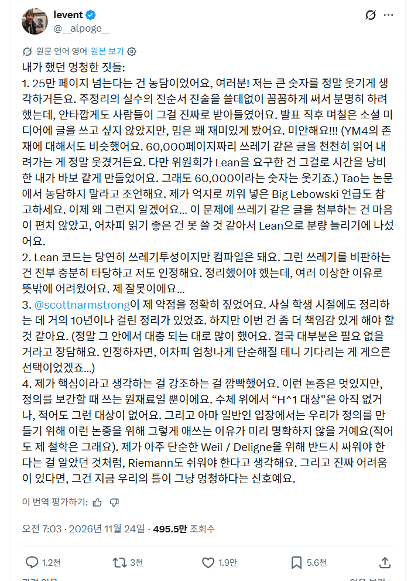
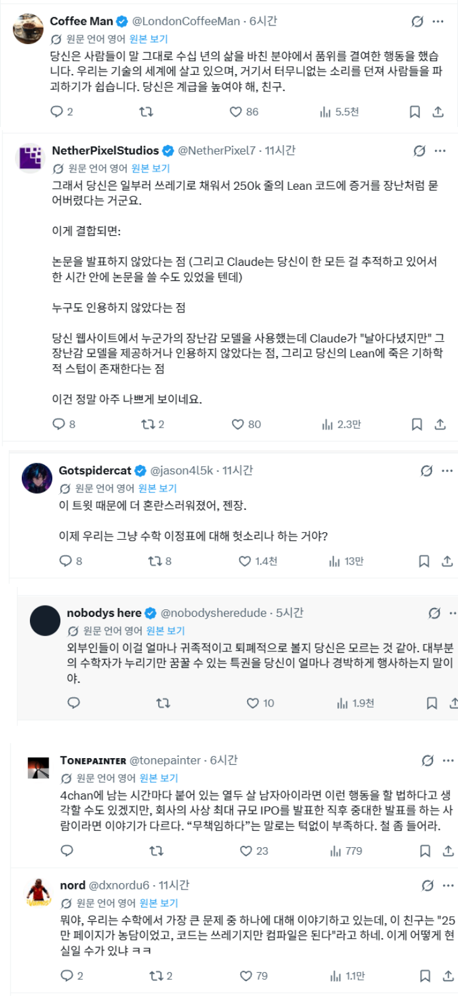
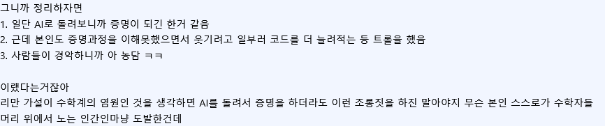

https://www.fmkorea.com/best/10591889523
먼저 4줄요약)
1. 앤트로픽에 의해서 리만가설이 증명됨
2. 근데 컴파일되었고 lean값이 증명되었다
즉 일종의 기계적 검사만 통과한 상태라 증명 내용은 아무도 이해 못함
3. 그거 주도한 연구원이 '어차피 아무도 이해 못할 내용이면
그냥 터무니없이 숫자를 부풀려서 25만페이지로 늘려보면 어떨까?ㅋㅋ'
하는 생각에서 일부러 쓰레기 코드와 헛소리를
마구 쑤셔넣어서 양을 부풀려 25만 페이지로 양을 늘렸다고 고백함.
4. 그동안 자기가 그냥 대충 던져넣은 25만 페이지를 가지고
언론과 사람들이 진지하게 반응하는거 보고
비웃고 이건 유머잖아 ㅋ 하고 밝힘
즉 그냥 AI로 자기도 이해 못하는 증명 만들어놓고
일부러 그 증명을 더 개판으로 만들어놓은 다음
전세계가 거기 매달려서 진지하게
분석해보려고 하는 걸 보고
지난 사흘간 비웃고 있었다는 소리임

물론 댓글은 난리남


앰챙개뱡신이 동작만 하는 스파게티 소스코드 ai로 생성해놓고 잘되고 tc통과하니까 굳?
ㅇㅈㄹ하는 상황이니